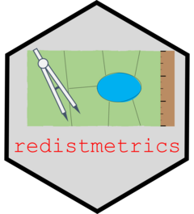

redistmetrics 
redistmetrics is one of the R packages developed and maintained by the ALARM Project. redistmetrics provides the back-end for the computation of summary statistics for a redistricting plan. It provides a more direct access point to use methods in redist without requiring redist objects.
Installation
You can install the stable version of redistmetrics from CRAN with:
install.packages('redistmetrics')You can install the development version of redistmetrics from GitHub with:
if (!requireNamespace('remotes')) install.packages('remotes')
remotes::install_github('alarm-redist/redistmetrics')Example
redistmetrics offers support for 4 common input types and has examples of each, all based on New Hampshire:
data(nh)This example is based on comp_polsby() for the Polsby Popper compactness, but comp_polsby() can be substituted for any implemented measure!
Single Plan:
For a single plan, we can pass the single plan to the input. We also pass an argument to shp which takes in an sf dataframe. r_2020 here is the Republican proposal for New Hampshire’s congressional districts.
comp_polsby(plans = nh$r_2020, shp = nh)
#> [1] 0.2324375 0.1582763The output here is a numeric vector, where each entry is the output for a district. The first district here has a compactness of about 0.23 and the second district has a compactness of about 0.16.
Now, if you’re redistricting in R, we recommend using the R package redist. In which case, you would have a redist_map object.
We can load an example here with:
data(nh_map)For redist maps, the workflow is identical!
comp_polsby(plans = nh_map$r_2020, shp = nh)
#> [1] 0.2324375 0.1582763Multiple Plans:
For multiple plans, we can pass either a matrix of plans or a redist_plans object to plans. We will still need nh or nh_map to provide the shapes.
If we have a matrix, we can compare with nh_m a matrix of plans, where each column indicates a plan.
data(nh_m)From there, the process is nearly identical. Here we compute the Polsby Popper compactness for the first two columns:
comp_polsby(plans = nh_m[, 1:2], shp = nh)
#> [1] 0.1844955 0.1796426 0.2324375 0.1582763Now we got 4 outputs: 1 for each district x 2 for each plan x 2 plans.
If we are using redist, we likely have a redist_plans object which hides the matrix as an attribute to give a more familiar tidy workflow. With that, we can do a very similar process:
First, we load the plans object (included as an example):
data(nh_plans)The benefit of using a redist_plans object is that we can cleanly mutate into it using the . shortcut:
library(dplyr)
#>
#> Attaching package: 'dplyr'
#> The following objects are masked from 'package:stats':
#>
#> filter, lag
#> The following objects are masked from 'package:base':
#>
#> intersect, setdiff, setequal, union
nh_plans <- nh_plans %>% mutate(polsby = comp_polsby(plans = ., shp = nh))
#> Linking to GEOS 3.9.3, GDAL 3.5.2, PROJ 8.2.1; sf_use_s2() is TRUENow our values are cleanly held in the redist_plans object:
head(nh_plans)
#> # A tibble: 6 × 4
#> draw district total_pop polsby
#> <fct> <int> <dbl> <dbl>
#> 1 d_2020 1 688739 0.184
#> 2 d_2020 2 688790 0.180
#> 3 r_2020 1 688676 0.232
#> 4 r_2020 2 688853 0.158
#> 5 1 1 688961 0.235
#> 6 1 2 688568 0.349Detailed information on each measure are contained in the vignettes and references are contained in the function documentation.